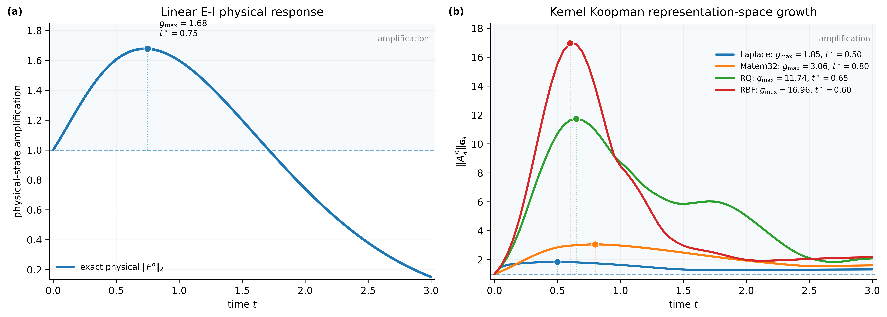
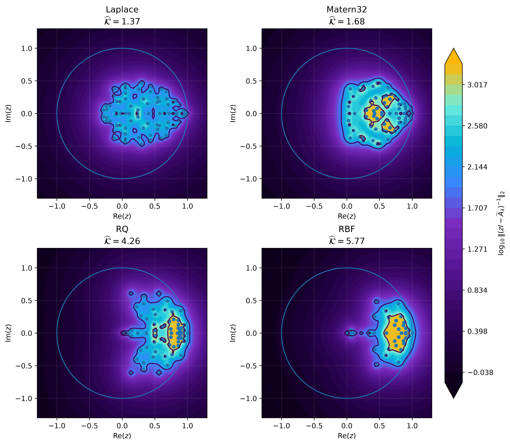
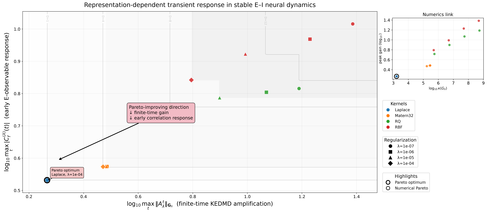

Symmetry and Geometry in Neural Representations
Kernelized Koopman Representation Geometry Governs Transient Amplification in Neural Dynamical Systems
The same neural dynamics can yield dramatically different finite-time behavior when represented in different reproducing kernel Hilbert spaces.
Illustrative curves only. The laboratory below displays numerical results from the research repository.
Eigenvalues alone do not tell the whole story.
Kernel choice changes the geometry in which a data-driven Koopman surrogate is measured. Even with nearly unit spectral radii, the resulting finite-time operator growth can differ substantially.
Identical physical dynamics
Compare kernelized representations learned from the same underlying neural dynamical system.
Distinct induced geometries
Each positive-definite kernel determines a different feature geometry and associated Gram matrix.
Non-normal amplification
Representation-dependent transient growth becomes visible through induced norms and pseudospectral diagnostics.
Representation-space maximum
Same physical system and snapshot pairs
Linear E–I · Wilson–Cowan · FitzHugh–Nagumo
Four kernels. Four representation geometries.
Original kernel-section visualizations from the accepted paper. Each kernel produces its own local similarity structure, even before applying the dynamical map.

Scientific figure: kernel-section geometry with normal vectors. Source: project repository.
Explore representation-dependent transient amplification.
Switch between neural dynamical systems and kernel representations. The peak gains, peak times and spectral radii below are loaded from the original CSV results in the repository.
Linear excitatory–inhibitory dynamics
Peak \(g_{\max}=\max_t\|A_\lambda^t\|_{G_\lambda}\). Bars use a shared 0–17× scale across all systems.
1.0000
0.50
1.65 × 10³
1.2257
Values refer to regularized finite-dimensional KEDMD surrogates, not intrinsic amplification of the infinite-dimensional Koopman operator.
Measured transient-growth curves

Published full curves; switch system above to change the figure.
Corresponding pseudospectra

Published pseudospectral contours for the selected system.
From kernel transport to finite-time response.
The paper develops a geometric account of sampled kernel-section transport, normalized KEDMD dynamics, transient growth, and pseudospectral sensitivity.
Finite kernel-section transport
The relative deformation of sampled RKHS geometry is quantified by the extremal generalized Gram ratio.
Growth and pseudospectral bounds
The normalized surrogate connects Gram-induced growth to Euclidean operator powers and the Kreiss constant.
Why can transient growth occur near the unit circle?
A non-normal operator can exhibit large finite-time powers even when its eigenvalues suggest little asymptotic growth. Pseudospectral expansion and resolvent sensitivity reveal this effect. The paper's results concern the normalized, regularized KEDMD surrogates.
What does the paper not claim?
The experiments and theorems quantify sampled RKHS geometry and finite-dimensional surrogates. They do not fully characterize boundedness, closability or spectral behavior of the original infinite-dimensional Koopman composition operator on every RKHS.
Results across three neural dynamical systems.
Explore the original polished figures and complementary dominance diagnostics. Use the selector to compare the same scientific visualization family across systems.
Finite-time amplification
Pseudospectral geometry
Pareto dominance diagnostics

Read the research. Explore the evidence.
Accepted to the Proceedings Track of the NeurIPS 2026 Workshop on Symmetry and Geometry in Neural Representations (NeuReps).
Research paper
Kernelized Koopman Representation Geometry Governs Transient Amplification in Neural Dynamical Systems
Reproducible figures and diagnostics
Source repository with figures, numerical summaries, and experiment artifacts.
Cite this work
@inproceedings{singh2026kernelized,
title={Kernelized Koopman Representation Geometry Governs Transient Amplification in Neural Dynamical Systems},
author={Singh, Himanshu},
booktitle={NeurIPS 2026 Workshop on Symmetry and Geometry in Neural Representations (NeuReps), Proceedings Track},
year={2026},
url={https://openreview.net/pdf?id=ZKhFhmuyuq}
}Provisional citation; update with the official proceedings metadata when assigned.